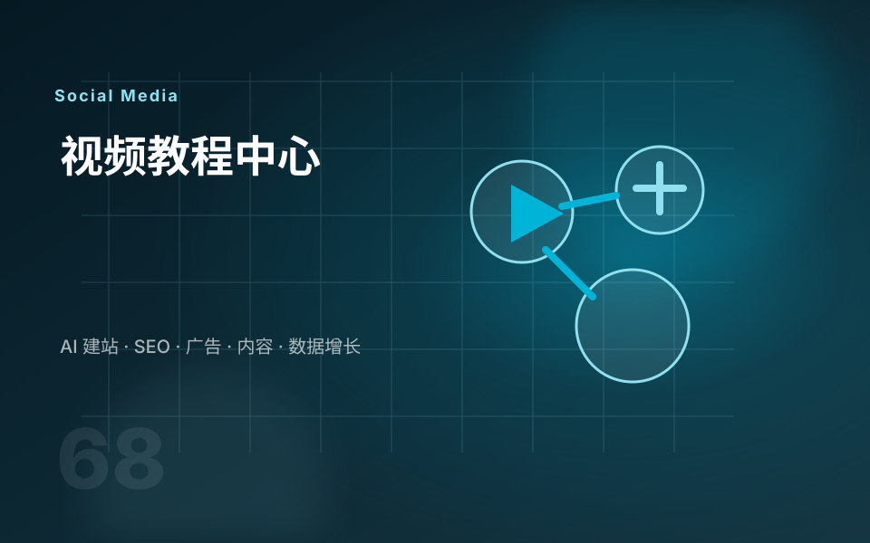

产品演示
展示功能、规格、应用场景、安装方式和常见问题，让客户更快理解产品。
YouTube 对外贸企业的价值，不只是播放量，而是长期可搜索的视频资产。参考 YouTube 官方 Analytics 思路，我会围绕受众、观看行为、搜索意图、视频结构和网站转化来规划视频内容。
采购商看视频通常是为了确认产品是否可靠、工厂是否真实、方案是否适合自己。视频内容应该服务买家决策，而不是只追求娱乐观看。
展示功能、规格、应用场景、安装方式和常见问题，让客户更快理解产品。
用生产流程、质检、包装、交付和团队说明增强可信度。
把客户反复问的问题做成短视频或长视频章节，并嵌入网站对应页面。

我把这些权威资料转成更适合 B2B 外贸企业的服务表达：先明确目标和受众，再规划内容、互动、广告、数据和线索承接。
对外贸企业来说，社媒的价值不是单纯涨粉，而是让潜在客户持续看见你、理解你、信任你，并能回到网站完成咨询。
把你的产品和已有视频发给我，我会帮你判断哪些视频最适合做搜索、信任和转化。